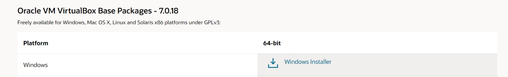

Instalacion de Ubuntu 20.04 con VirtualBox

Configuracion de VirtualBOX
Selecciono la opción «nueva»

Coloco un nombre para la máquina virtual

Cargo la imagen ISO


Agrego un Usuario y contraseña para la máquina virtual
Congifuro la memoria ram y el número de nucleos (se recomienda utilizar el 50% de la memoria RAM Física)
Para un uso básico se recomienda un total de 30 GB de memoria

Finalizo la configuración

Arrancar Máquina virtual - Al iniciar la máquina de forma automática comenzará la instalación

Instalación de locales
Al realizarse la instalación utilizando una Máquina virtual es posible que no podamos acceder a la terminal de ubuntu, por lo cual es necesario realizar la configuración de forma manual de los locales
Presionamos las teclas ctrl+alt+F3
Ingresamos nuestras credenciales
Accedemos al superu suario
su
la contraseña es la misma que usamos para nuestro usuario regular.
a continuación realizamos la configuración de los locales.
locale
sudo apt update && sudo apt install locales
sudo locale-gen en_US en_US.UTF-8
sudo update-locale LC_ALL=en_US.UTF-8 LANG=en_US.UTF-8
export LANG=en_US.UTF-8
locale
y reiniciamos el sistema
init 6
Posibles Errores -
Tu Usuario no está en el archivo sudousers
solucion en la terminal colocar
su -
posteriormente agrego el nombre de usuario
sudo adduser [su nombre de usuario] sudo
Al momento de ejecutar la máquina virtual NOT IN A HYPERVISOR PARTITION (HVP =0 ) solucion